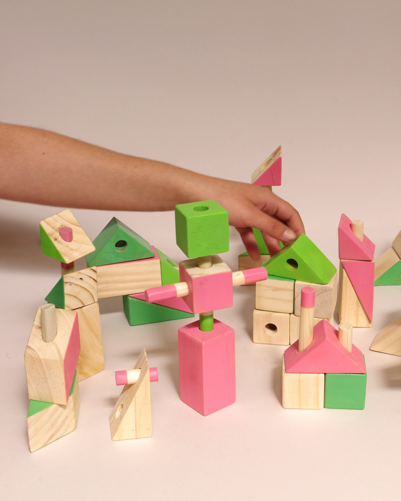
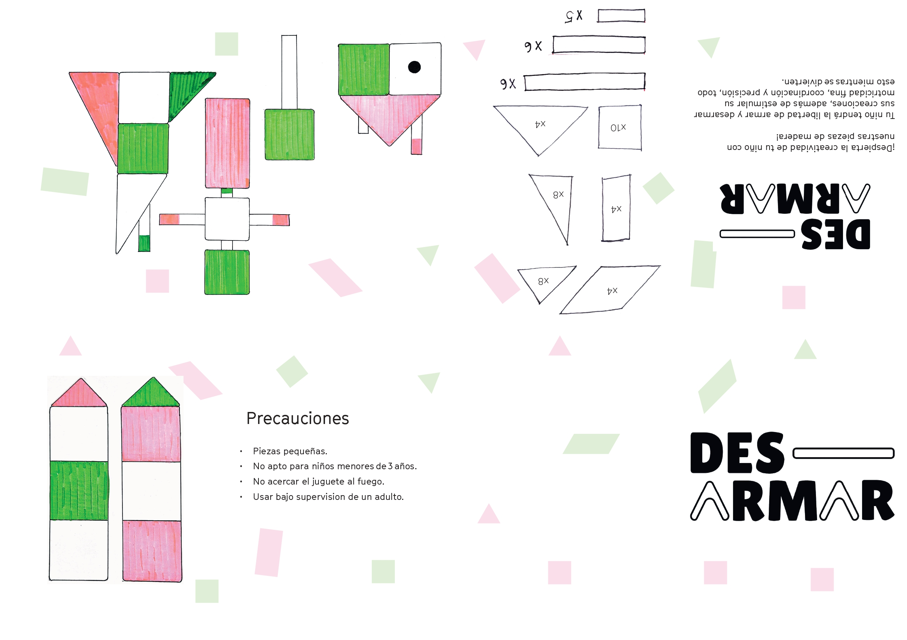
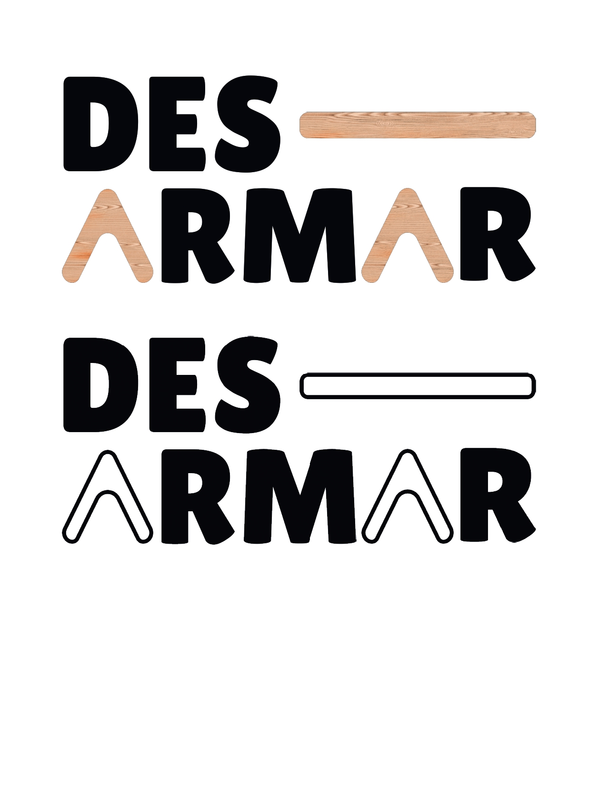
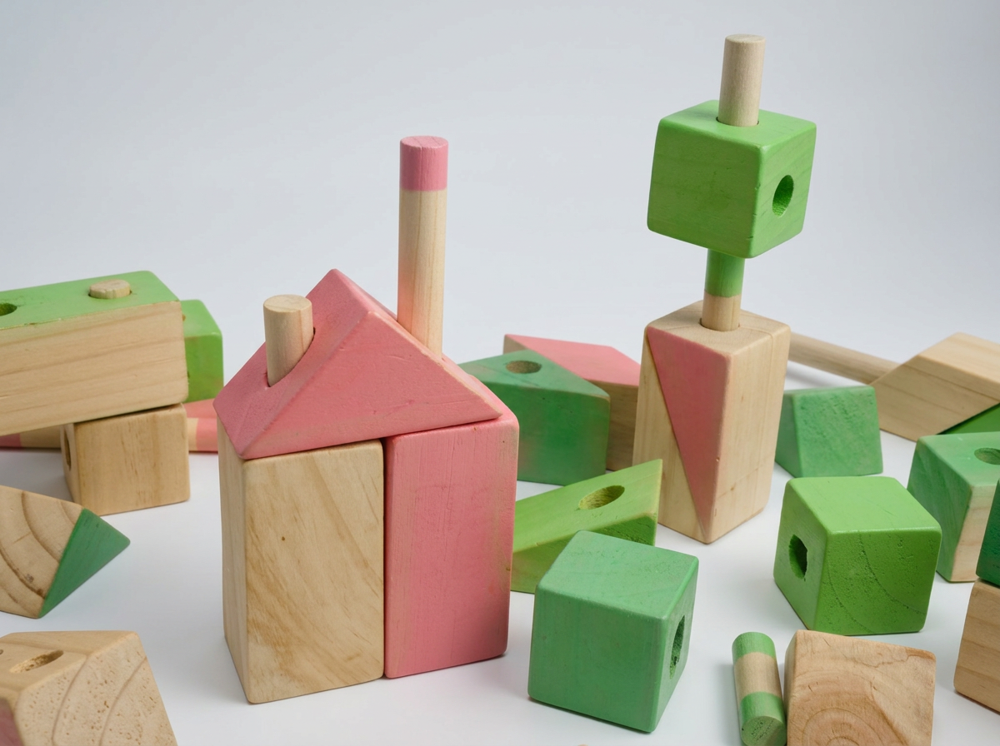
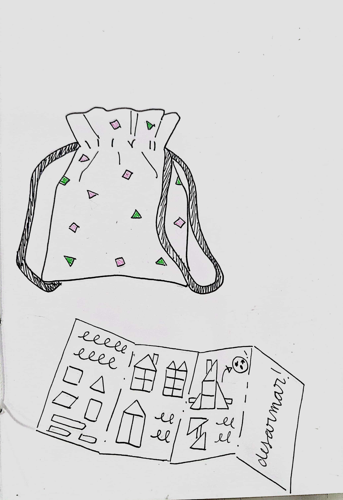
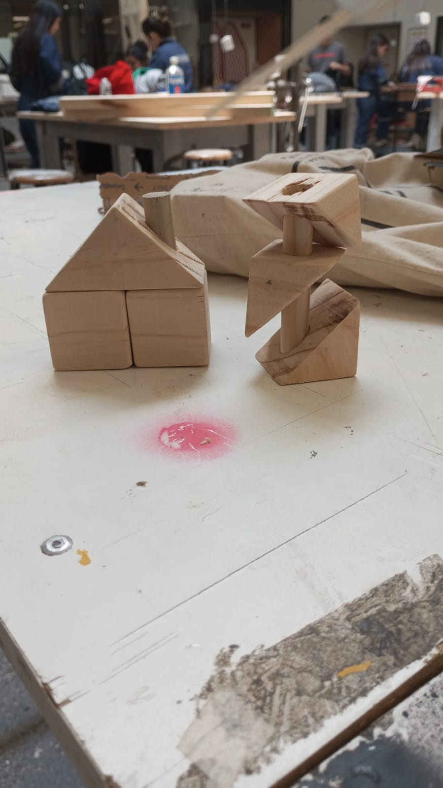
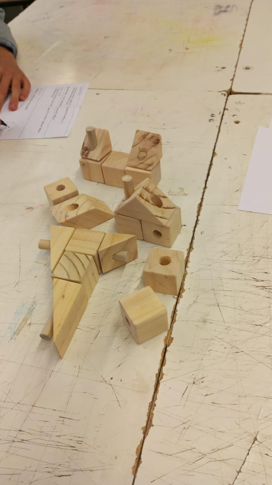

Des-armar
Set de bloques de madera pintados en piezas geométricas simples —triángulos, cubos, cilindros— pensado para que niños y niñas los armen y desarmen libremente, sin una única forma "correcta" de construir. Cada pieza se puede combinar con las demás para crear figuras nuevas, estimulando la motricidad fina y la creatividad.





